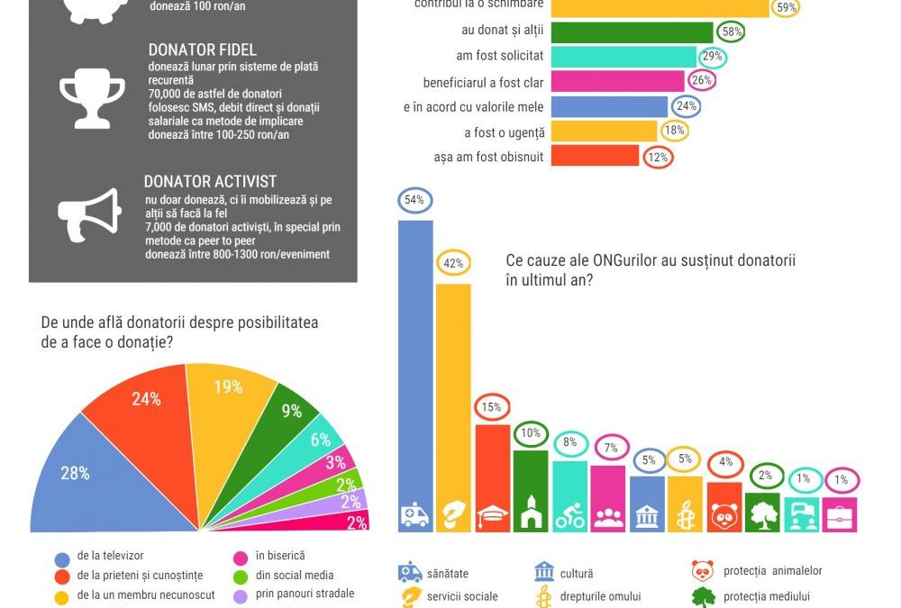

See also:
Potential Partners:
Proposals ARC for RUF- January 2021:
Other Research on same topic:
Raport privind potentialul de implicare al Diaporei in Comunitatile din Tara Fagarasului
What research/survey objectives would help RUF define a better strategy for Romanian Diaspora?
-get a deeper understanding of RUF audience
General
1.The size of philanthropic behavior:
-the frequency of donors in population,
-types of donation
-value of donations
-donations areas of interest
- final beneficiaries
2.Mechanisms of the philanthropic act:
- donor motivations
- sources of information,
-donation mechanisms used
- frequency of donations
3.Future trends:
- the probability of donating in the future for a certain
type of nonprofit or Diaspora program or focus area
- preferred donation methods
-are they more likely to donate if we offer a Diaspora program
-what would make them donate to a RUF type of nonprofit
4.For RUF donors
5.Romanian Entrepreneur as Philanthropist (focus group for this segment of audience?)
ARC Trends in Romanian Philanthropy at a glance:

-În ultimul an 63% din populația adultă a făcut cel puțin o donație în bani către una din categoriile investigate
-În cadrul populației urbane adulte avem un total de circa 4,8 milioane donatori. Din aceștia aproape 1,7 milioane au făcut o donație unei organizații neguvernamentale (asociație, fundație sau federație) și 2 milioane declară că au făcut o donație unei instituții de cult în ultimul an.
-Profilul donatorilor
Ne-donatori: Sunt mai degrabă bărbați, cu vârsta între 18-34 de ani, mai probabil să fie din București, au numai studii primare și venituri mici (sub 1200 lei net/luna)
Donatorii organizațiilor neguvernamentale: Mai degrabă femei (diferență foarte mică), cel mai frecvent au vârsta între 55-65 de ani (dar vârsta joacă un rol relativ redus), locuiesc în București sau într-un oraș mic (sub 50.000 de locuitori), au studii universitare și un venit mai mare (peste 2500 lei net/luna)
Donatorii instituțiilor religioase: Sunt preponderent femei, cu vârsta între 55-65 de ani, au studii universitare (dar diferența față de alte niveluri de educație este foarte redusă), iar categoria de venit nu joacă un rol important
Tabelul următor cuprinde o sinteză a tipurilor de motivații structurate conform unei clasificări realizate de Pavol Frič în 2000: •
Emoționale: bazate pe un sentiment spontan de compasiune la orice nivel;
Raționale: fie implică un beneficiu (material sau nu) sau un process preponderant rațional de luare a deciziei (bazat pe impactul sau abordarea organizației sau încrederea în aceasta);
Normative: Norme sociale care exercită o presiune ce favorizează actul de donație.
Mila Emotionala A fost o urgenta Beneficiar clar 36%
Pentru ca pot Normativa E in acord cu valorile mele Au donat si altii Am fost solicitat 31%
Am incredere in organziatie Rationala Contribui la schimbare Prea putini ii sustin 20%